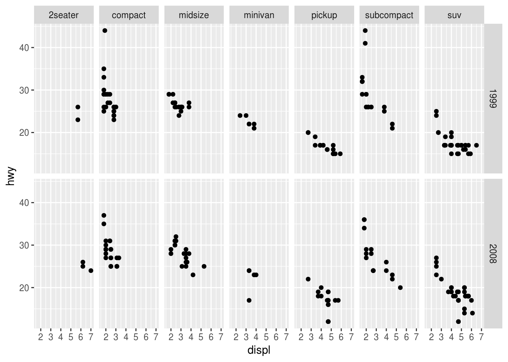
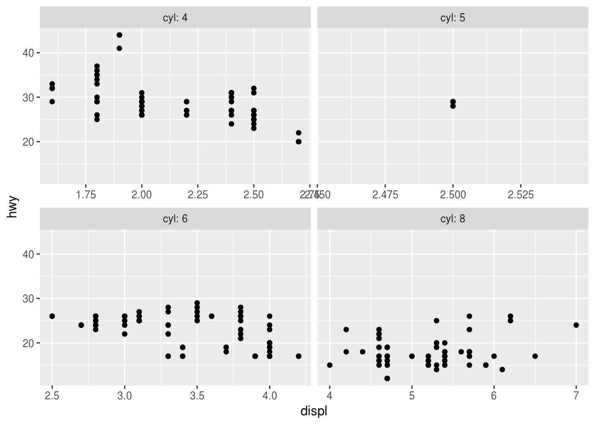
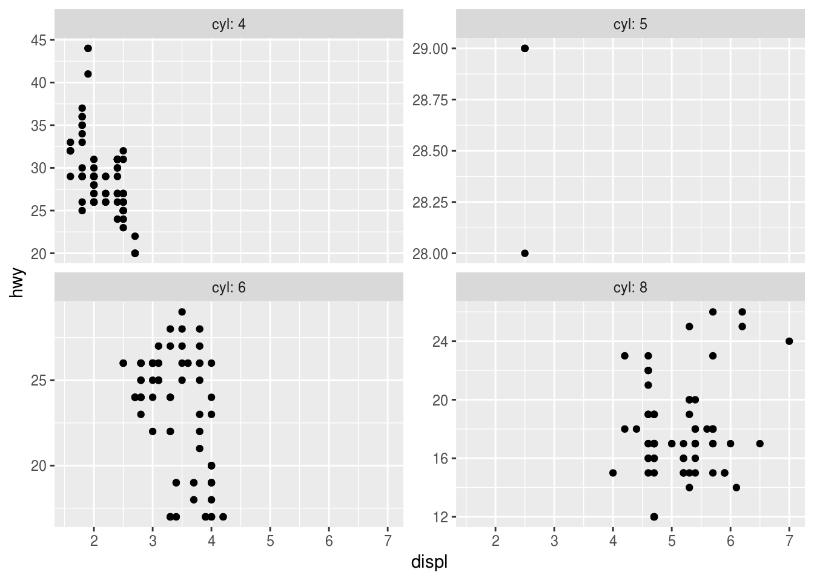

Facets
Kirill Müller, cynkra GmbH
June 1, 2017
Improvement over time?
Has fuel economy changed considerably between 1999 and 2008? Perhaps there is a difference if you also consider the car class? Experiment with facet_wrap(), facet_grid(), aesthetic mappings, and smoothing layers.
ggplot(_____) +
geom_point() +
facet_wrap(~___)ggplot(_____) +
geom_point() +
geom_smooth() +
facet_grid(___ ~ ___)► Solution:
We can split the simple scatterplot over two facets, one per year:
ggplot(data = mpg) +
geom_point(mapping = aes(x = displ, y = hwy)) +
facet_wrap(~year)The smoothing layer seems to confirm a slight improvement, especially for engines with a displacement of three or more liters:
ggplot(data = mpg) +
geom_point(mapping = aes(x = displ, y = hwy)) +
geom_smooth(mapping = aes(x = displ, y = hwy)) +
facet_wrap(~year)## `geom_smooth()` using method = 'loess' and formula 'y ~ x'
We can also look at each car class in parallel.
ggplot(data = mpg) +
geom_point(mapping = aes(x = displ, y = hwy)) +
facet_grid(year~class)
But too many facets may be not as helpful, we can also use color:
ggplot(data = mpg) +
geom_point(
mapping = aes(x = displ, y = hwy, color = factor(year))
) +
geom_smooth(
mapping = aes(x = displ, y = hwy, color = factor(year)),
method = "lm"
) +
facet_wrap(~class)Labeling the facets
What changes if you add the argument labeller = "label_both" to the facet_wrap() call?
► Solution:
This is useful if the value does not speak for itself:
ggplot(data = mpg) +
geom_point(mapping = aes(x = displ, y = hwy)) +
facet_wrap(~cyl, labeller = "label_both")Different scales
Is it possible to use a different x and y scale for each facet? How?
► Solution:
Via the scales argument, zooms in to the range of the corresponding scale(s).
ggplot(data = mpg) +
geom_point(mapping = aes(x = displ, y = hwy)) +
facet_wrap(
~cyl,
labeller = "label_both",
scales = "free_x"
)
ggplot(data = mpg) +
geom_point(mapping = aes(x = displ, y = hwy)) +
facet_wrap(
~cyl,
labeller = "label_both",
scales = "free_y"
)
ggplot(data = mpg) +
geom_point(mapping = aes(x = displ, y = hwy)) +
facet_wrap(
~cyl,
labeller = "label_both",
scales = "free"
)Other arguments
Experiment with other arguments to facet_wrap() and facet_grid().
More exercises
Find more exercises in Section 3.5.1 of r4ds.
Copyright © 2018 Kirill Müller. Licensed under CC BY-NC 4.0.